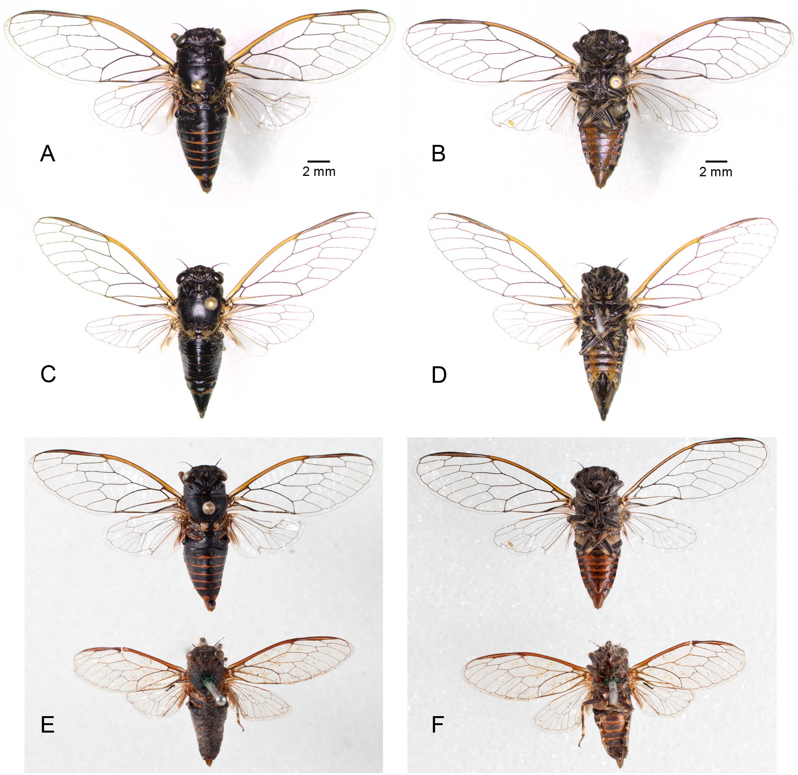
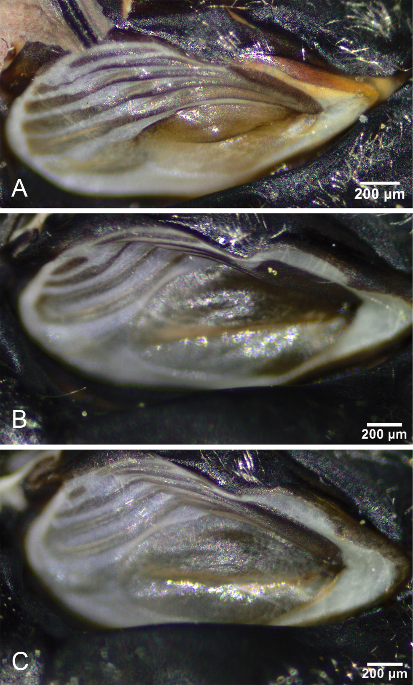
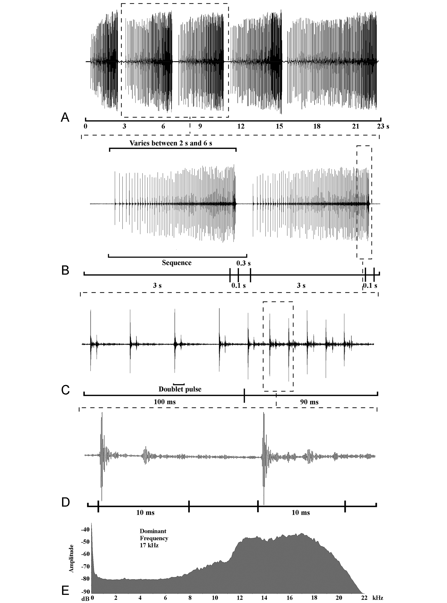
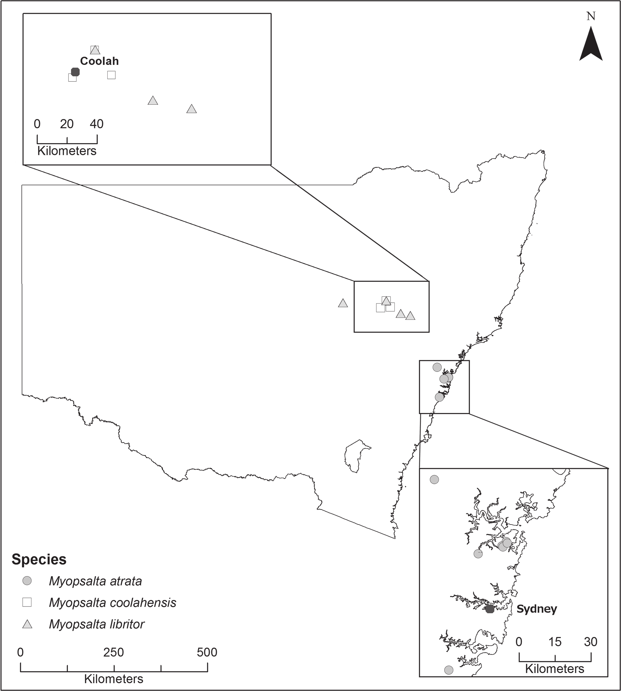

Records of the Australian Museum 2015 67(6): 185-199
Redescription of Myopsalta atrata (Goding and Froggatt) and description of two new species of Myopsalta Moulds (Hemiptera: Cicadidae) from central western New South Wales
Emery, Nathan J., Emery, David L., Popple, Lindsay W.
Abstract
Full text
Full text is available as a scanned copy of the original print version.
Get a printable copy (PDF file) of the
complete article, or click on a page image below to browse page by page.
Links are also available for
Selected References.
Images in this article

Figure 1 Myopsalta atrata (Goding & Froggatt). (A) male, Royal National Park (34°06'59"S 151°03'30"E), dorsal habitus; (B) male, ventral habitus; (C) female, Royal National Park, dorsal habitus; (D) female, ventral habitus; (E) comparison of dorsal habitus of Royal National Park (34°06'59"S 151°03'30"E) male (top) with lectotype male (New South Wales, ANIC) (bottom); (F) comparison of ventral habitus of Royal NP male (top) with lectotype male (bottom). A–F same scale.

Figure 2 Photos of male left timbals, with dorsal edge at left and posterior margin at bottom: (A) Myopsalta atrata (Goding & Froggatt), Royal National Park (34°06'59"S 151°03'30"E); (B) Myopsalta coolahensis sp.nov., Coolah (31°56'25"S 149°52'18"E); (C) Myopsalta libritor sp.nov., Merriwa (32°08'19"S 150°21'00"E). Scale bars = 200 µm.
Figure 3 Myopsalta atrata—illustration of male pygofer and internal genitalia; (A) viewed laterally from the left; (B) viewed ventrally; (C) aedeagus, lateral view; and (D) aedeagus, rotated 30° left from central view C. Characters include: aed, aedeagus; as, anal style; bpl, basal lobe of pygofer; cl, clasper; db, dorsal beak; eth, endotheca; ps, pseudoparameres; un, uncus; upl, upper lobe of pygofer; vs, ventral support.

Figure 4 Male calling song structure of Myopsalta atrata (Goding & Froggatt) illustrated in waveform plot form. Each lower plot is expanded from the one above, to illustrate the finer temporal structure of each song comparison. The spectrogram at the bottom of the figure displays song frequency, which exhibits no modulation between the song components in this species. This specimen was recorded in the field by LWP at Royal National Park (34°06'59"S 151°03'30"E).

Figure 5 Map of eastern Australia showing the geographical distribution of M. atrata (closed circles), M. coolahensis sp.nov. (open squares) and M. libritor sp.nov. (closed triangles).
Figure 8 Male calling song structures of Myopsalta coolahensis sp.nov., illustrated in waveform plot form. Each lower plot is expanded from the one above, to illustrate the finer temporal structure of each song comparison. The spectrogram at the bottom of the figure displays song frequency, which exhibits no modulation between the song components in this species. This specimen was recorded by NJE in the field near Coolah (31°56'25"S 149°52'18"E) at 10h30 on 14 November 2014.
Figure 11 Male calling song structure of Myopsalta libritor sp.nov., illustrated in waveform plot form. Each lower plot is expanded from the one above, to illustrate the finer temporal structure of each song comparison. The spectrogram at the bottom of the figure displays song frequency. The specimen was recorded in grass by NJE at Merriwa (32°08'19"S 150°21'00"E) at 09h00 on 14 November 2014.